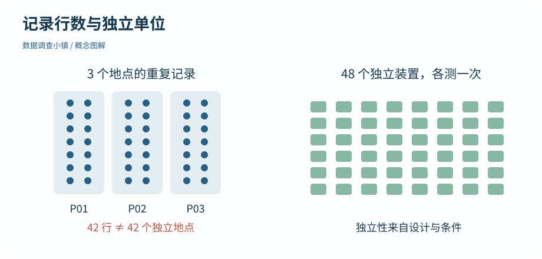

第 25 节 · 抽样公园
一行数据算一个样本吗
42 条记录，为什么不一定是 42 个独立样本？
区分总体、样本、观察单位、随机抽样和随机分组。
本节目录
运行位置：打开练习包内的 r-lab.Rproj，在项目根目录运行本节脚本。安装与准备见第 02—04 节；第 13 节说明扩展包。
从“我想知道谁”开始
总体是问题所指向的对象集合，样本是实际观察到的部分。想了解一周内三处地点的记录，与想推断整座城市所有公园的气温，是两个不同目标。再精确的函数，也不会自动把小范围数据变成有代表性的全城样本。
先写下研究对象、时间范围、记录规则和观察单位。一行是一个人、一个地点、一个装置，还是同一对象的一次测量？这些决定应该怎样理解样本量。
图解 · 记录行数与独立单位

左边是三个地点的重复记录，右边是分别观测一次的独立装置。编号数量不能代替对采样设计的判断。
放大查看 ↗ 保存 SVG ↓# 数据调查小镇 · 第 25 节
# 在 r-lab 项目根目录运行；输出只写入 results。
trial <- read.csv("data/shade_trial.csv")
observations <- read.csv("data/observations.csv")
print(c(trial_rows = nrow(trial), independent_units = length(unique(trial$unit_id))))
print(c(observation_rows = nrow(observations), distinct_sites = length(unique(observations$site_id))))
# 同一地点的重复记录不等于同样多的独立地点。 trial_rows independent_units
48 48
observation_rows distinct_sites
43 3两种资料，单位不同
一周观察表来自三个地点，反复记录日期和时段。地点内的测量可能相关。它可以帮助描述变化，但简单地把所有行视为独立地点，会夸大信息量。
遮阳材料实验则模拟了 48 个独立装置，随机分成 A、B 两组，每个装置只报告一次降温结果。两组独立均值比较的基本设计，在这里更合适。独立性来自数据产生方式，不能单靠软件看到不同编号就证明。
随机抽样与随机分组不是同一件事
随机抽样从目标总体中选择谁进入样本，有助于讨论代表性；随机分组把已经进入实验的单位分配到不同条件，有助于减少组间系统差异。一个实验可以随机分组，却只涉及很有限的装置与环境，因此其外推范围仍然受限。
我们的资料是模拟的：用它学习方法及设计假设，而不是据此推荐某种真实材料。代码中的“随机”也要说明是抽样、分配，还是仅为画图轻微抖动的位置。
先承认边界，再学习推断
统计推断需要条件，不能靠记录数量掩盖采样偏差。如果只在最热的一天、最繁忙的地点收集数据，更多相似记录也未必能代表全年全城。你应能在运行检验前，用普通语言说明数据支持哪些对象、哪些问题。
下一节会生成一批又一批新的样本，观察统计量如何波动。那是一个了解不确定性的实验，不是把当前三处地点假装扩充为上千处地点。
动手试试
判断单位是否重复
三个地点各记录 14 次，能否直接称为 42 个独立地点样本？为什么？
给我一点提示
一行的单位与地点层级的单位需要区分。
查看参考解法与解释
不能。地点只有 3 个，同一地点的重复测量可能相关。可以描述 42 条测量记录，但若要地点级推断，需要考虑采样设计与相关结构。
带走这一点
下一节继续沿地图向前。也可以先修改本节例子中的一个值，解释输出为什么变化。
检查一下理解
随机分组主要决定什么？
查看解释
随机分组与随机抽样分别处理条件分配和样本来源。